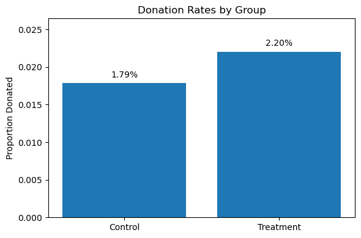
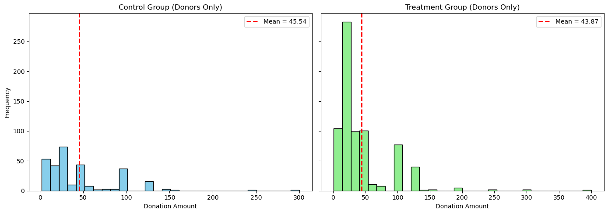
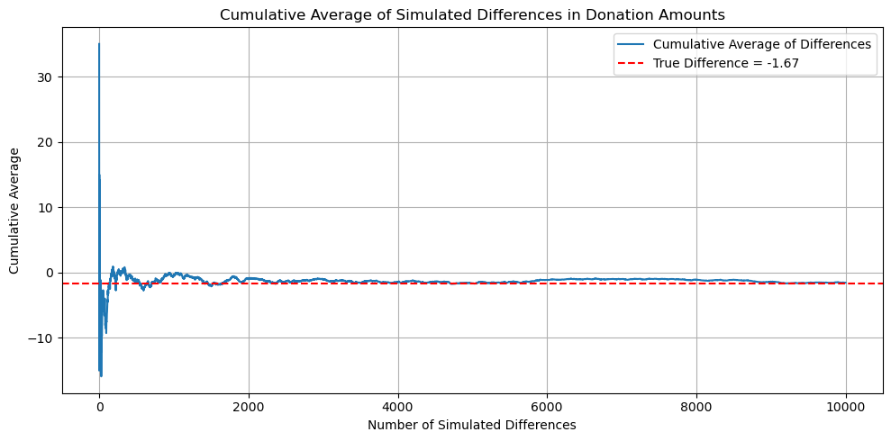
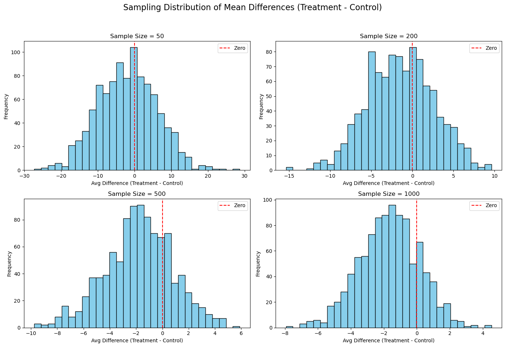

import pandas as pd
import numpy as np
import statsmodels.api as sm
import matplotlib.pyplot as plt
from scipy import statsRead in data
df = pd.read_stata("karlan_list_2007.dta")
df.columnsIndex(['treatment', 'control', 'ratio', 'ratio2', 'ratio3', 'size', 'size25',
'size50', 'size100', 'sizeno', 'ask', 'askd1', 'askd2', 'askd3', 'ask1',
'ask2', 'ask3', 'amount', 'gave', 'amountchange', 'hpa', 'ltmedmra',
'freq', 'years', 'year5', 'mrm2', 'dormant', 'female', 'couple',
'state50one', 'nonlit', 'cases', 'statecnt', 'stateresponse',
'stateresponset', 'stateresponsec', 'stateresponsetminc', 'perbush',
'close25', 'red0', 'blue0', 'redcty', 'bluecty', 'pwhite', 'pblack',
'page18_39', 'ave_hh_sz', 'median_hhincome', 'powner', 'psch_atlstba',
'pop_propurban'],
dtype='object')Balance Test
variables = ['mrm2', 'hpa', 'freq'] # you can add more
results = []
def t_test_formula(x_treat, x_control):
# T-test using pooled standard error
mean1, mean2 = np.mean(x_treat), np.mean(x_control)
std1, std2 = np.std(x_treat, ddof=1), np.std(x_control, ddof=1)
n1, n2 = len(x_treat), len(x_control)
se = np.sqrt((std1**2 / n1) + (std2**2 / n2))
t_stat = (mean1 - mean2) / se
return t_stat, mean1 - mean2
for var in variables:
treat_group = df[df['treatment'] == 1][var].dropna()
control_group = df[df['treatment'] == 0][var].dropna()
# --- T-test
t_stat, t_diff = t_test_formula(treat_group, control_group)
# --- Linear regression
X = sm.add_constant(df['treatment'])
y = df[var]
model = sm.OLS(y, X).fit()
reg_coef = model.params['treatment']
reg_se = model.bse['treatment']
reg_tstat = model.tvalues['treatment']
results.append({
'Variable': var,
'T-test statistic': round(t_stat, 4),
'Mean Diff (T-test)': round(t_diff, 4),
'Regression Coef': round(reg_coef, 4),
'T-stat (Regression)': round(reg_tstat, 4),
'Match?': 'Yes' if np.isclose(t_stat, reg_tstat, atol=1e-4) else 'No'
})
results_df = pd.DataFrame(results)
results_df| Variable | T-test statistic | Mean Diff (T-test) | Regression Coef | T-stat (Regression) | Match? | |
|---|---|---|---|---|---|---|
| 0 | mrm2 | 0.1195 | 0.0137 | NaN | NaN | No |
| 1 | hpa | 0.9704 | 0.6371 | 0.6371 | 0.9441 | No |
| 2 | freq | -0.1108 | -0.0120 | -0.0120 | -0.1109 | Yes |
# Second# Example proportions (replace with your actual values)
proportion_treatment = df[df['treatment'] == 1]['gave'].mean()
proportion_control = df[df['treatment'] == 0]['gave'].mean()
# Barplot setup
labels = ['Control', 'Treatment']
values = [proportion_control, proportion_treatment]
plt.figure(figsize=(6, 4))
plt.bar(labels, values)
plt.ylabel('Proportion Donated')
plt.title('Donation Rates by Group')
plt.ylim(0, max(values)*1.2)
# Add percentage labels above bars
for i, v in enumerate(values):
plt.text(i, v + 0.0005, f"{v:.2%}", ha='center', va='bottom')
plt.tight_layout()
plt.show()
# --- T-TEST: Difference in proportions for binary outcome 'gave' between treatment and control ---
# Separate treatment and control groups
gave_treatment = df[df['treatment'] == 1]['gave']
gave_control = df[df['treatment'] == 0]['gave']
# Calculate group means and sizes
p1 = gave_treatment.mean()
p2 = gave_control.mean()
n1 = gave_treatment.shape[0]
n2 = gave_control.shape[0]
# Calculate standard error and t-statistic
se = np.sqrt((p1 * (1 - p1) / n1) + (p2 * (1 - p2) / n2))
t_stat = (p1 - p2) / se
# Calculate degrees of freedom and p-value
df_ttest = n1 + n2 - 2
p_value = 2 * (1 - stats.t.cdf(abs(t_stat), df=df_ttest))
print("T-test results:")
print(f" Treatment mean: {p1:.4f}")
print(f" Control mean: {p2:.4f}")
print(f" T-statistic: {t_stat:.4f}")
print(f" P-value: {p_value:.4f}\n")
# --- LINEAR REGRESSION: gave ~ treatment ---
# Run regression
X = sm.add_constant(df['treatment'])
y = df['gave']
model = sm.OLS(y, X).fit()
print("Regression results:")
print(model.summary())T-test results:
Treatment mean: 0.0220
Control mean: 0.0179
T-statistic: 3.2095
P-value: 0.0013
Regression results:
OLS Regression Results
==============================================================================
Dep. Variable: gave R-squared: 0.000
Model: OLS Adj. R-squared: 0.000
Method: Least Squares F-statistic: 9.618
Date: Mon, 21 Apr 2025 Prob (F-statistic): 0.00193
Time: 15:12:52 Log-Likelihood: 26630.
No. Observations: 50083 AIC: -5.326e+04
Df Residuals: 50081 BIC: -5.324e+04
Df Model: 1
Covariance Type: nonrobust
==============================================================================
coef std err t P>|t| [0.025 0.975]
------------------------------------------------------------------------------
const 0.0179 0.001 16.225 0.000 0.016 0.020
treatment 0.0042 0.001 3.101 0.002 0.002 0.007
==============================================================================
Omnibus: 59814.280 Durbin-Watson: 2.005
Prob(Omnibus): 0.000 Jarque-Bera (JB): 4317152.727
Skew: 6.740 Prob(JB): 0.00
Kurtosis: 46.440 Cond. No. 3.23
==============================================================================
Notes:
[1] Standard Errors assume that the covariance matrix of the errors is correctly specified.import statsmodels.formula.api as smf
# Probit regression of 'gave' on 'treatment'
probit_model = smf.probit('gave ~ treatment', data=df).fit()
print(probit_model.summary())Optimization terminated successfully.
Current function value: 0.100443
Iterations 7
Probit Regression Results
==============================================================================
Dep. Variable: gave No. Observations: 50083
Model: Probit Df Residuals: 50081
Method: MLE Df Model: 1
Date: Mon, 21 Apr 2025 Pseudo R-squ.: 0.0009783
Time: 15:12:53 Log-Likelihood: -5030.5
converged: True LL-Null: -5035.4
Covariance Type: nonrobust LLR p-value: 0.001696
==============================================================================
coef std err z P>|z| [0.025 0.975]
------------------------------------------------------------------------------
Intercept -2.1001 0.023 -90.073 0.000 -2.146 -2.054
treatment 0.0868 0.028 3.113 0.002 0.032 0.141
==============================================================================from scipy.stats import ttest_ind
# Subset groups based on match ratio
gave_ratio1 = df[df['ratio'] == 1]['gave']
gave_ratio2 = df[df['ratio'] == 2]['gave']
gave_ratio3 = df[df['ratio'] == 3]['gave']
# Perform independent t-tests
t_2v1, p_2v1 = ttest_ind(gave_ratio2, gave_ratio1, equal_var=False)
t_3v2, p_3v2 = ttest_ind(gave_ratio3, gave_ratio2, equal_var=False)
t_3v1, p_3v1 = ttest_ind(gave_ratio3, gave_ratio1, equal_var=False)
# Print results
print("T-Test Results (Donation Likelihood by Match Ratio):\n")
print(f"2:1 vs 1:1 -> t = {t_2v1:.3f}, p = {p_2v1:.4f}")
print(f"3:1 vs 2:1 -> t = {t_3v2:.3f}, p = {p_3v2:.4f}")
print(f"3:1 vs 1:1 -> t = {t_3v1:.3f}, p = {p_3v1:.4f}")T-Test Results (Donation Likelihood by Match Ratio):
2:1 vs 1:1 -> t = 0.965, p = 0.3345
3:1 vs 2:1 -> t = 0.050, p = 0.9600
3:1 vs 1:1 -> t = 1.015, p = 0.3101# Regress using 'ratio' as a categorical variable (automatically handles dummies)
cat_model = smf.ols('gave ~ C(ratio)', data=df).fit()
print("\nRegression with Categorical Variable:")
print(cat_model.summary())
Regression with Categorical Variable:
OLS Regression Results
==============================================================================
Dep. Variable: gave R-squared: 0.000
Model: OLS Adj. R-squared: 0.000
Method: Least Squares F-statistic: 3.665
Date: Mon, 21 Apr 2025 Prob (F-statistic): 0.0118
Time: 15:33:53 Log-Likelihood: 26630.
No. Observations: 50083 AIC: -5.325e+04
Df Residuals: 50079 BIC: -5.322e+04
Df Model: 3
Covariance Type: nonrobust
=================================================================================
coef std err t P>|t| [0.025 0.975]
---------------------------------------------------------------------------------
Intercept 0.0179 0.001 16.225 0.000 0.016 0.020
C(ratio)[T.1] 0.0029 0.002 1.661 0.097 -0.001 0.006
C(ratio)[T.2] 0.0048 0.002 2.744 0.006 0.001 0.008
C(ratio)[T.3] 0.0049 0.002 2.802 0.005 0.001 0.008
==============================================================================
Omnibus: 59812.754 Durbin-Watson: 2.005
Prob(Omnibus): 0.000 Jarque-Bera (JB): 4316693.217
Skew: 6.740 Prob(JB): 0.00
Kurtosis: 46.438 Cond. No. 4.26
==============================================================================
Notes:
[1] Standard Errors assume that the covariance matrix of the errors is correctly specified.import statsmodels.formula.api as smf
# --- RAW RESPONSE RATE DIFFERENCES ---
# Compute average donation rates by ratio level
response_rate_1to1 = df[df['ratio'] == 1]['gave'].mean()
response_rate_2to1 = df[df['ratio'] == 2]['gave'].mean()
response_rate_3to1 = df[df['ratio'] == 3]['gave'].mean()
# Calculate raw differences
raw_diff_2v1 = response_rate_2to1 - response_rate_1to1
raw_diff_3v2 = response_rate_3to1 - response_rate_2to1
print("Raw response rate differences:")
print(f" 2:1 vs 1:1: {raw_diff_2v1:.4f}")
print(f" 3:1 vs 2:1: {raw_diff_3v2:.4f}\n")
# --- REGRESSION APPROACH ---
# Create dummy variables if not already present
df['ratio2'] = (df['ratio'] == 2).astype(int)
df['ratio3'] = (df['ratio'] == 3).astype(int)
# Fit model using 1:1 as baseline
model = smf.ols('gave ~ ratio2 + ratio3', data=df).fit()
# Extract regression-based differences
reg_diff_2v1 = model.params['ratio2']
reg_diff_3v2 = model.params['ratio3'] - model.params['ratio2']
print("Regression-estimated response rate differences:")
print(f" 2:1 vs 1:1: {reg_diff_2v1:.4f}")
print(f" 3:1 vs 2:1: {reg_diff_3v2:.4f}")Raw response rate differences:
2:1 vs 1:1: 0.0019
3:1 vs 2:1: 0.0001
Regression-estimated response rate differences:
2:1 vs 1:1: 0.0036
3:1 vs 2:1: 0.0001### Size of Charitable Contributionfrom scipy.stats import ttest_ind
import statsmodels.formula.api as smf
# --- T-TEST ---
# Compare donation amounts between treatment and control groups
amount_treatment = df[df['treatment'] == 1]['amount']
amount_control = df[df['treatment'] == 0]['amount']
# T-test (unequal variance)
t_stat, p_val = ttest_ind(amount_treatment, amount_control, equal_var=False)
print("T-test: Donation Amount ~ Treatment")
print(f" T-statistic: {t_stat:.3f}")
print(f" P-value: {p_val:.4f}\n")
# --- REGRESSION ---
# Run bivariate regression
model = smf.ols('amount ~ treatment', data=df).fit()
print("Bivariate Linear Regression: Donation Amount ~ Treatment")
print(model.summary())T-test: Donation Amount ~ Treatment
T-statistic: 1.918
P-value: 0.0551
Bivariate Linear Regression: Donation Amount ~ Treatment
OLS Regression Results
==============================================================================
Dep. Variable: amount R-squared: 0.000
Model: OLS Adj. R-squared: 0.000
Method: Least Squares F-statistic: 3.461
Date: Mon, 21 Apr 2025 Prob (F-statistic): 0.0628
Time: 15:37:20 Log-Likelihood: -1.7946e+05
No. Observations: 50083 AIC: 3.589e+05
Df Residuals: 50081 BIC: 3.589e+05
Df Model: 1
Covariance Type: nonrobust
==============================================================================
coef std err t P>|t| [0.025 0.975]
------------------------------------------------------------------------------
Intercept 0.8133 0.067 12.063 0.000 0.681 0.945
treatment 0.1536 0.083 1.861 0.063 -0.008 0.315
==============================================================================
Omnibus: 96861.113 Durbin-Watson: 2.008
Prob(Omnibus): 0.000 Jarque-Bera (JB): 240735713.635
Skew: 15.297 Prob(JB): 0.00
Kurtosis: 341.269 Cond. No. 3.23
==============================================================================
Notes:
[1] Standard Errors assume that the covariance matrix of the errors is correctly specified.from scipy.stats import ttest_ind
import statsmodels.formula.api as smf
# --- FILTER: Only people who donated ---
df_donors = df[df['gave'] == 1]
# --- T-TEST on Amount Given ---
amount_treatment = df_donors[df_donors['treatment'] == 1]['amount']
amount_control = df_donors[df_donors['treatment'] == 0]['amount']
t_stat, p_val = ttest_ind(amount_treatment, amount_control, equal_var=False)
print("T-test (Amount Given | Gave = 1):")
print(f" T-statistic: {t_stat:.3f}")
print(f" P-value: {p_val:.4f}\n")
# --- REGRESSION: Donation Amount ~ Treatment (only donors) ---
model = smf.ols('amount ~ treatment', data=df_donors).fit()
print("OLS Regression (Amount Given | Gave = 1):")
print(model.summary())T-test (Amount Given | Gave = 1):
T-statistic: -0.585
P-value: 0.5590
OLS Regression (Amount Given | Gave = 1):
OLS Regression Results
==============================================================================
Dep. Variable: amount R-squared: 0.000
Model: OLS Adj. R-squared: -0.001
Method: Least Squares F-statistic: 0.3374
Date: Mon, 21 Apr 2025 Prob (F-statistic): 0.561
Time: 15:37:43 Log-Likelihood: -5326.8
No. Observations: 1034 AIC: 1.066e+04
Df Residuals: 1032 BIC: 1.067e+04
Df Model: 1
Covariance Type: nonrobust
==============================================================================
coef std err t P>|t| [0.025 0.975]
------------------------------------------------------------------------------
Intercept 45.5403 2.423 18.792 0.000 40.785 50.296
treatment -1.6684 2.872 -0.581 0.561 -7.305 3.968
==============================================================================
Omnibus: 587.258 Durbin-Watson: 2.031
Prob(Omnibus): 0.000 Jarque-Bera (JB): 5623.279
Skew: 2.464 Prob(JB): 0.00
Kurtosis: 13.307 Cond. No. 3.49
==============================================================================
Notes:
[1] Standard Errors assume that the covariance matrix of the errors is correctly specified.import matplotlib.pyplot as plt
# Filter to only people who donated
df_donors = df[df['gave'] == 1]
# Split into treatment and control
treatment_donors = df_donors[df_donors['treatment'] == 1]['amount']
control_donors = df_donors[df_donors['treatment'] == 0]['amount']
# Calculate means
mean_treatment = treatment_donors.mean()
mean_control = control_donors.mean()
# Plot histograms
fig, axes = plt.subplots(1, 2, figsize=(14, 5), sharey=True)
# Control group plot
axes[0].hist(control_donors, bins=30, color='skyblue', edgecolor='black')
axes[0].axvline(mean_control, color='red', linestyle='--', linewidth=2, label=f'Mean = {mean_control:.2f}')
axes[0].set_title("Control Group (Donors Only)")
axes[0].set_xlabel("Donation Amount")
axes[0].set_ylabel("Frequency")
axes[0].legend()
# Treatment group plot
axes[1].hist(treatment_donors, bins=30, color='lightgreen', edgecolor='black')
axes[1].axvline(mean_treatment, color='red', linestyle='--', linewidth=2, label=f'Mean = {mean_treatment:.2f}')
axes[1].set_title("Treatment Group (Donors Only)")
axes[1].set_xlabel("Donation Amount")
axes[1].legend()
plt.tight_layout()
plt.show()
import numpy as np
import matplotlib.pyplot as plt
# Filter to only people who donated
df_donors = df[df['gave'] == 1]
# Control and treatment donation amounts
control = df_donors[df_donors['treatment'] == 0]['amount'].values
treatment = df_donors[df_donors['treatment'] == 1]['amount'].values
# True difference in means
true_diff = treatment.mean() - control.mean()
# Simulate draws
np.random.seed(42)
control_draws = np.random.choice(control, size=100000, replace=True)
treatment_draws = np.random.choice(treatment, size=10000, replace=True)
# Sample 10,000 control values from the 100,000 to match length
control_draws_subset = np.random.choice(control_draws, size=10000, replace=False)
# Calculate vector of differences
differences = treatment_draws - control_draws_subset
# Compute cumulative average
cumulative_avg = np.cumsum(differences) / np.arange(1, len(differences) + 1)
# Plot cumulative average
plt.figure(figsize=(10, 5))
plt.plot(cumulative_avg, label='Cumulative Average of Differences')
plt.axhline(true_diff, color='red', linestyle='--', label=f'True Difference = {true_diff:.2f}')
plt.title("Cumulative Average of Simulated Differences in Donation Amounts")
plt.xlabel("Number of Simulated Differences")
plt.ylabel("Cumulative Average")
plt.legend()
plt.grid(True)
plt.tight_layout()
plt.show()
import numpy as np
import matplotlib.pyplot as plt
# Filter to only people who donated
df_donors = df[df['gave'] == 1]
# Extract treatment and control donation values
control = df_donors[df_donors['treatment'] == 0]['amount'].values
treatment = df_donors[df_donors['treatment'] == 1]['amount'].values
# Sample sizes and number of simulations
sample_sizes = [50, 200, 500, 1000]
num_simulations = 1000
# Setup 2x2 plot
fig, axes = plt.subplots(2, 2, figsize=(14, 10))
axes = axes.flatten()
np.random.seed(42)
for i, n in enumerate(sample_sizes):
avg_diffs = []
for _ in range(num_simulations):
control_sample = np.random.choice(control, size=n, replace=True)
treatment_sample = np.random.choice(treatment, size=n, replace=True)
avg_diffs.append(np.mean(treatment_sample) - np.mean(control_sample))
ax = axes[i]
ax.hist(avg_diffs, bins=30, color='skyblue', edgecolor='black')
ax.axvline(0, color='red', linestyle='--', label='Zero')
ax.set_title(f"Sample Size = {n}")
ax.set_xlabel("Avg Difference (Treatment - Control)")
ax.set_ylabel("Frequency")
ax.legend()
plt.suptitle("Sampling Distribution of Mean Differences (Treatment - Control)", fontsize=16)
plt.tight_layout(rect=[0, 0.03, 1, 0.95])
plt.show()